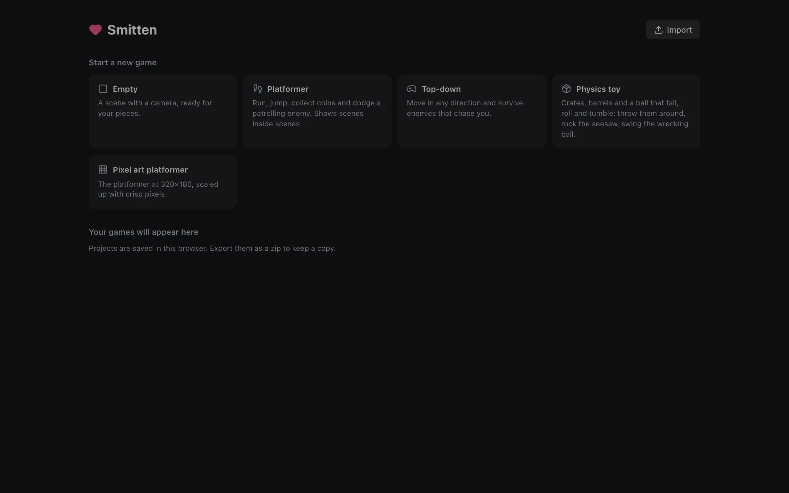
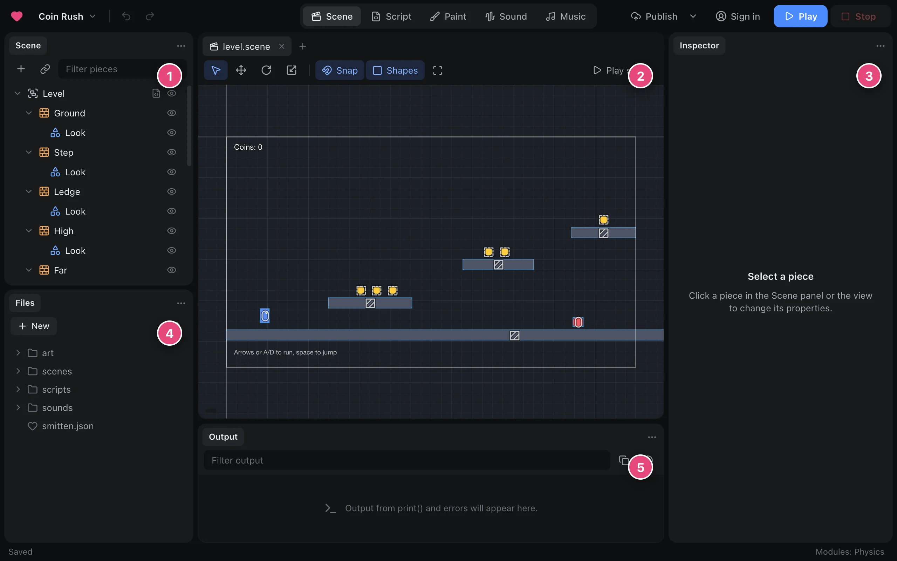
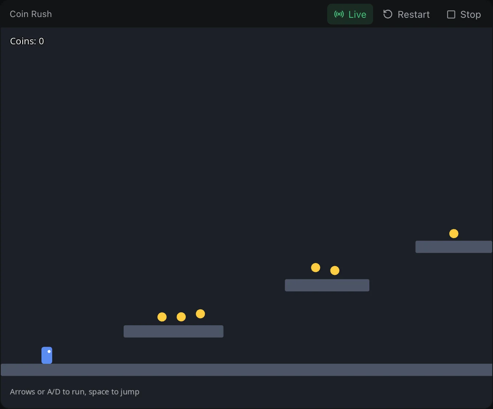
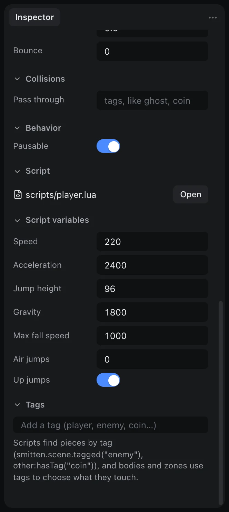
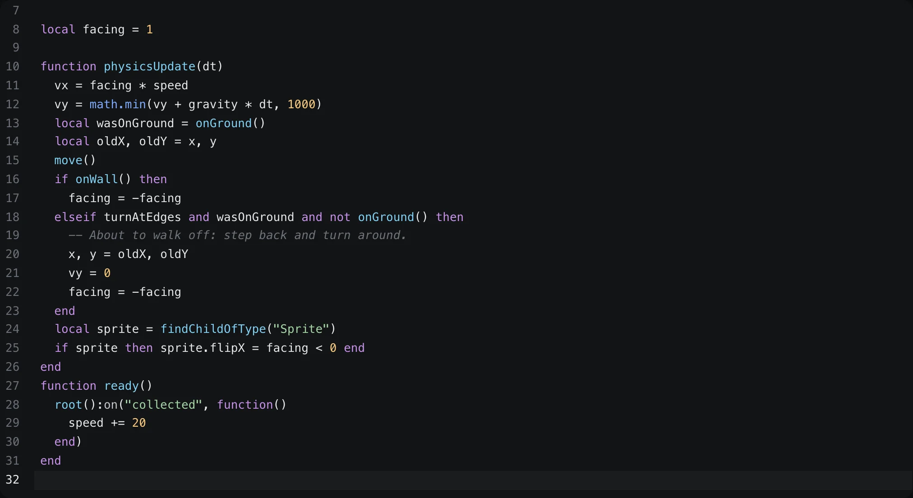
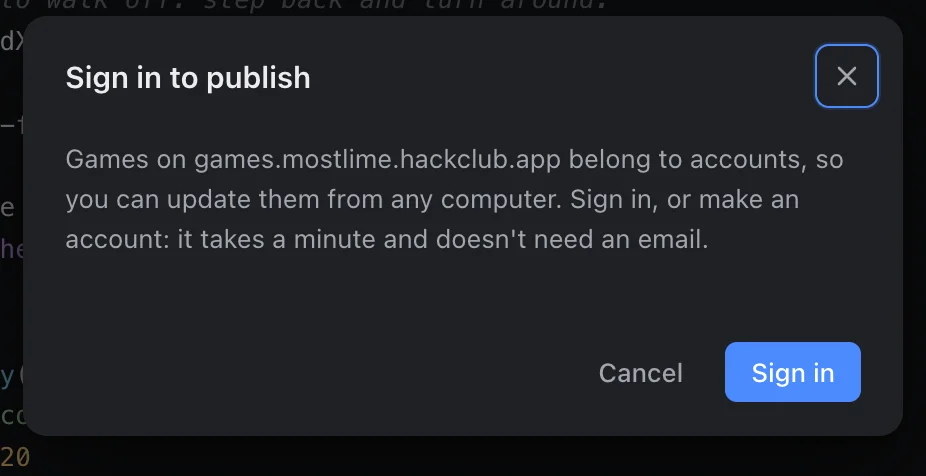

Getting started
In this tutorial, you make a small platformer. It has a player who runs and jumps, coins to collect and an enemy to avoid. You change how the game plays, you write your first script, and you put the game on the internet. Then anyone can play it. The tutorial takes approximately fifteen minutes. You do not have to know how to write programs.
1. Make a game
- Open the editor. The home screen shows your games and some templates.
- Click Platformer.
- Give the game a name.

The editor opens your game. These are the parts of the editor:

- Scene panel: all the pieces in the current scene, as a tree. A piece is one thing in your game: the player, a coin, a floor, a camera, or a Label on the screen.
- Scene view: the level. Click a piece to select it. Drag a piece to move it. Scroll to zoom.
- Inspector: the properties of the selected piece, for example its position, its color, or how fast it runs.
- Files panel: all the files in your project, for example scenes, scripts, images and sounds.
- Output: messages from your game while it runs, and errors.
You can move the panels to different positions. To move a panel, drag its tab. You can also drag a panel out into a different window.
2. Play it
- Click Play at the top right, or press F5.
- To run, use the arrow keys, or A and D.
- To jump, press Space.
- Collect the coins. Stay away from the red enemy. If the player touches the enemy, the level starts again.

To go back to the editor, click Stop or press F8.
3. Change how it plays
- In the Scene panel, click Player. The Inspector shows the properties of the player. Near the bottom, under Script variables, there are numbers for the movement:
speed,jumpHeight,gravityand more.
The player's script variables in the Inspector - Set
jumpHeightto160. - Set
airJumpsto1. - Play the game again. The player jumps much higher now, and can jump a second time in the air.
You can change these values while the game runs. While the game runs, select a piece. Then change a property. The game changes immediately. When you stop the game, the scene goes back to its values from before. Because of this, you can safely try different values. After you stop, type in the values that you like.
4. Add more coins
Each coin is a placed scene: the level has the scene scenes/coin.scene in it more than one time.
- To add a coin, drag
coin.scenefrom the Files panel into the scene view. - Change the coin scene one time (for example, its color). All the coins in the level change.
The counter at the top of the screen changes automatically. A script on the level counts the coins when the game starts. Each time the player collects a coin, the script adds one to the counter.
5. Write a script
Scripts make pieces do things. Each piece can have one script, in Lua. In this step, the enemy moves a little faster each time that you collect a coin.
- Select Enemy in the Scene panel.
- Click the script badge of the enemy. The editor opens
scripts/patrol.lua. - Add this code at the end of the script:
function ready() root():on("collected", function() speed += 20 end) end
The enemy's script in the Script workspace - Play the game again. Each time that you collect a coin, the enemy moves faster.
The engine calls ready() one time, when the enemy comes into the scene. root() is the level. A coin sends the event collected when the player collects it. on("collected", ...) listens for this event. In a script, names such as speed belong to the piece. Because of this, speed += 20 makes this enemy faster.
If there is a problem, Output shows the error with the file and the line. Click the error to go to that line.
6. Share it
When your game is ready, publish it:
- Click Publish in the top bar.
- Sign in, or make an account.
- Give the game a title and a short description.
- Click Publish.
You get a link. Anyone can open the link to play your game in a browser, or to remix their own copy.

To put the game on a different website, for example itch.io, use Project › Export.
Next steps
- Scripts tells more about how scripts work.
- Scenes and pieces tells how to make, find and remove pieces.
- Input, Sound and music and Camera each tell about one part of a game.
- Script API shows each function that a script can use.